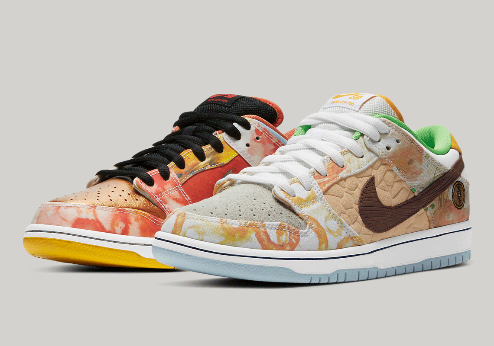

SB Dunk Low Pro
Street Hawker
A pesar de sus orígenes regionales, la comida china es famosa en todo el mundo. Este exquisito Dunk rinde homenaje a la popular cocina de este país con un estampado en contraste que representa varios platos. Seguro que se te abrirá el apetito.
Los estampados de acuarelas encarnan las distintas recetas, al tiempo que los demás detalles deliberados (como los caracteres chinos del talón y la moneda de cobre bordada) hacen referencia a otros aspectos de la cultura culinaria oriental. Consigue el nuevo y delicioso SB antes de que cerremos por hoy.
Para comprar da click aqui